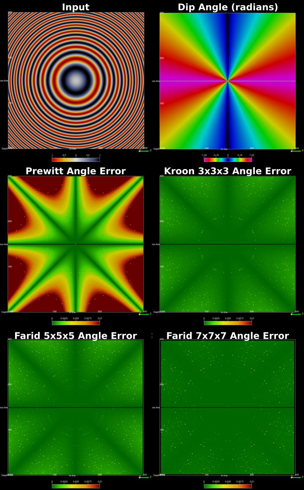

GradientAttrib
Calculation of inline, crossline and time/depth gradient for the open source seismic interpretation platform OpendTect 6.0.0 or later.
Description
This plugin calculates the inline, crossline or time/depth gradient using operators optimised for rotation invariance, ie equal response in all directions, proposed by Kroon (2009) and Farid and Simoncelli(2004). These provide more accurate alternatives to the Prewitt filter option of the OpendTect Convolve attribute for computing gradients.
The attribute offers a choice of Kroon's 3x3x3, Farid and Simoncelli's 5x5x5 or Farid and Simoncelli's 7x7x7 operator. The following figures demonstrate the relative accuracy of these operators and the OpendTect Prewitt filter on a simple periodic signal (top left) with event dip angle shown top right. Gradients calculated using each operator are used to compute the event dip angle and the absolute dip angle error. The superior accuracy of the operators provided by this attribute is clear.

Input Parameters
This attribute has 3 parameters:
| NAME | DESCRIPTION |
|---|---|
| Input Volume | The input attribute volume. |
| Output Gradient | What to calculate - choice of Inline, Crossline or Z gradient. |
| Operator | What operator to use - choice of Kroon's 3x3x3, Farid's 5x5x5 or Farid's 7x7x7. |